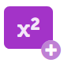
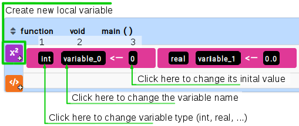

Local Variable
The variables are used to store values.
In the case of local variable, it is all variable created within a given function.
In this case, it will be known only within that function.
It is recommended that use only this type of variable, avoiding global variables, because the latter can lead to confusion in the code.

- Type: defines the type of information to be stored (integer, float, string, logical and array)
- Name: defines the name of the variable, used to trigger it from any part of the program
- Value: sets the first value to be stored in the variable (initialize the variable)